Figure 2: Business Analytics Dashboard
Submitted in partial fulfilment of the requirements for the course
| Student Details | Information |
|---|---|
| Student HT No. | 2303A51197 |
| Student Name | kommarajula prakash |
| Faculty Coordinator | Dr. Mohammed Ali Shaik, Professor, School of Computer Science & Artificial Intelligence |
| Designation | Professor |
| School | School of Computer Science & Artificial Intelligence |
| Academic Year | 2026–2027 |
| Semester | I |
| Course Code | 23CS102PE405 |
Ananthasagar, Hasanparthy, Warangal, Telangana, India – 506371 | www.sru.edu.in
This is to certify that the course project report entitled "BILLFLOW – INVOICE GENERATION AND BUSINESS BILLING MANAGEMENT PLATFORM" submitted by kommarajula prakash (Hall Ticket No: 2303A51197) in partial fulfilment of the requirements for the course DEVOPS AND FULL STACK DEVELOPMENT (Course Code: 23CS102PE405) is an authentic record of bonafide academic and engineering work carried out under our guidance and supervision at the School of Computer Science & Artificial Intelligence, SR University, Warangal during the Academic Year 2026–2027 (Semester I).
The results embodied in this course project report have been verified through direct live deployment, automated continuous integration pipelines, end-to-end integration testing, and formal code evaluation. This work has not been submitted previously to any other university or examining body for the award of any degree, diploma, or academic credit.
|
Dr. Mohammed Ali Shaik Professor & Faculty Coordinator School of Computer Science & AI SR University, Warangal
|
Head of the Department School of Computer Science & AI SR University, Warangal
|
External Examiner Evaluation Committee SR University, Warangal
|
I, kommarajula prakash, bearing Hall Ticket No. 2303A51197, student of Bachelor of Technology in the School of Computer Science & Artificial Intelligence, SR University, Warangal, hereby declare that the course project report entitled "BILLFLOW – INVOICE GENERATION AND BUSINESS BILLING MANAGEMENT PLATFORM" is a genuine and original work carried out independently by me under the supervision and mentorship of Dr. Mohammed Ali Shaik, Professor, School of Computer Science & Artificial Intelligence.
I confirm that:
https://github.com/prakashkommarajula-dot/Billing-Platform and the live deployment hosted on Render Cloud Infrastructure at https://billflow-billing-platform.onrender.com represent my original design, implementation, and DevOps orchestration.|
Date: 11-11-2026 Place: Warangal, Telangana
|
kommarajula prakash HT No: 2303A51197 B.Tech (DevOps & Full Stack Development) School of Computer Science & Artificial Intelligence SR University, Warangal
|
I express my deepest gratitude and sincere appreciation to my Faculty Coordinator, Dr. Mohammed Ali Shaik, Professor, School of Computer Science & Artificial Intelligence, SR University, for his invaluable guidance, constant motivation, insightful suggestions, and thorough technical critique throughout the design, implementation, and deployment phases of BillFlow. His deep insights in full-stack engineering principles and cloud computing paradigms served as a continuous source of inspiration.
I extend my heartfelt gratitude to the Dean and Head of the Department, School of Computer Science & Artificial Intelligence, SR University, for fostering an exceptional environment of engineering excellence and providing the required laboratory equipment, cloud infrastructure, and computational resources necessary for executing this project.
I am also thankful to all the faculty members, laboratory instructors, and administrative staff of the School of Computer Science & Artificial Intelligence for their direct and indirect encouragement during the semester.
Finally, I wish to express my sincere appreciation to my parents, family members, and classmates for their enduring patience, moral support, and creative feedback during long hours of coding, testing, and debugging.
kommarajula prakash
(HT No: 2303A51197)
BillFlow is a production-ready, full-stack cloud accounting and invoice management platform developed to address the acute operational bottlenecks faced by small-to-medium enterprises (SMEs), trading firms, and freelance professionals. Conventional billing workflows frequently rely on error-prone spreadsheet calculations, fragmented paper documentation, and manual tax computation, leading to significant delays in invoice issuance, audit discrepancies, and impeded cash collection.
To resolve these challenges, BillFlow implements a modern three-tier decoupled architecture comprising: (1) a responsive single-page application (SPA) frontend developed with React.js, Vite, Tailwind CSS, Lucide React, and Recharts; (2) a modular backend application tier powered by Node.js, Express.js, JWT authentication, and bcryptjs; and (3) a cloud-hosted document database tier on MongoDB Atlas with Mongoose object data modeling. The platform incorporates an automated Indian GST calculation engine that dynamically evaluates customer state codes against billing organization profiles to apply Intra-State (CGST + SGST) or Inter-State (IGST) taxation, alongside an on-the-fly vector PDF invoice generator built with PDFKit.
A strict Role-Based Access Control (RBAC) model enforces separation of duties across four dedicated user personas: Business Owner, Accountant, Customer, and System Admin. To ensure enterprise operational readiness, BillFlow adopts an automated DevOps pipeline featuring multi-stage Docker containerization, local Kubernetes orchestration via KIND (Kubernetes in Docker), and continuous deployment to Render Cloud Infrastructure (https://billflow-billing-platform.onrender.com). Rigorous black-box, white-box, API, and load testing demonstrated a 100% test pass rate across 42 verified scenarios, guaranteeing sub-150ms API response latencies, zero financial ledger drift, and robust multi-tenant data isolation.
| Chapter | Title | Suggested Contents | Page No. |
|---|---|---|---|
| — | Preliminary Pages | Cover Page, Certificate, Declaration, Acknowledgement, Abstract | i–v |
| 1 | Introduction | Background, Problem Statement, Objectives, Scope, Limitations and Assumptions | 1 |
| 2 | Requirement Analysis | Stakeholders, User Roles, Functional Requirements (FR-01 to FR-18), Non-Functional Requirements, Minimum Screens, Mandatory Reports, Feasibility | 6 |
| 3 | System Design | Proposed Three-Tier Architecture, Data Flow Diagrams (DFD Level 0, 1, 2), Use Cases, Database Schema & Entity Relationships, UI Wireframes | 13 |
| 4 | Implementation | Technology Stack Matrix, Module-wise Implementation, REST API Documentation, Installation Guide, Core Source Code Highlights | 23 |
| 5 | Testing and Results | Testing Strategy, Sample Test Cases Matrix (TC-01 to TC-42), Application Screenshots & In-depth Analysis (Figures 1 to 21), Defects and Fixes Table | 36 |
| 6 | DevOps and Deployment | Git/GitHub Workflow, CI/CD Pipeline Automation, Docker Containerization, Kubernetes KIND Manifests, Cloud Deployment on Render, Monitoring & Logging | 49 |
| 7 | Conclusion and Future Scope | Project Outcomes, Architectural Evaluation, Future Enhancements (e-Invoicing, WhatsApp Dispatch, AI Forecasting) | 60 |
| — | References and Appendices | IEEE References, Appendix A: User Manual & Faculty Evaluation Guide, Appendix B: Complete Demo Credentials Directory | 63 |
In the contemporary global commercial ecosystem, financial transactions and invoice management constitute the foundational lifeblood of modern businesses. Small and Medium Enterprises (SMEs), specialized service providers, contractors, and freelance professionals are under intense pressure to maintain high operational agility, accurate financial accounting, and stringent regulatory tax compliance. For decades, commercial accounting relied upon physical ledger paper books, manual carbon-copy invoices, or standalone single-user desktop spreadsheet software such as Microsoft Excel.
While manual spreadsheets offer initial flexibility at zero software cost, they introduce immense operational vulnerabilities as a business scales. Studies in software ergonomics and operational accounting show that over 88% of unverified commercial spreadsheets contain arithmetic calculation bugs, broken cell cross-references, or omitted tax formulas. Furthermore, desktop files lack centralized concurrency, meaning multiple operators cannot concurrently record customer purchases, log payments, or track outstanding balances without overwriting each other's changes.
In jurisdictions with structured indirect taxation laws—most notably the Goods and Services Tax (GST) regime introduced across India—invoicing is not merely a commercial exchange notice but a legally audited statutory instrument. A compliant GST tax invoice must record precise supplier and recipient Goods and Services Tax Identification Numbers (GSTIN), 15-digit alphanumeric state identifiers, standardized Harmonized System of Nomenclature (HSN) or Services Accounting Code (SAC) classifications, and a strict arithmetic bifurcation between:
Executing these bifurcated calculations by hand under high transaction volumes leads inevitably to calculation mistakes, missed tax filing deadlines, penalties from statutory tax authorities, and severely delayed accounts receivable collections. The BillFlow platform was engineered from the ground up to solve these pressing challenges by uniting full-stack web engineering, resilient database architecture, and a modern containerized DevOps deployment lifecycle into an accessible, high-performance Software-as-a-Service (SaaS) solution.
Commercial entities operating in emerging economies and modern digital markets face persistent, systematic friction during their day-to-day billing and invoicing cycles. Through empirical examination of existing workflows across small accounting departments and independent traders, the following critical problem domains were identified:
The primary purpose of the BillFlow project is to design, implement, containerize, and deploy a secure, responsive, full-stack Cloud Accounting and Billing Management Platform. The specific technical and operational objectives are outlined below:
docker-compose.yml linking client, server, and local MongoDB instances over an isolated internal bridge network.https://billflow-billing-platform.onrender.com) with live database fail-fast connection resilience.The functional and architectural boundaries of the BillFlow platform encompass:
29ABCDE1234F1Z5 when enabling automated GST features.Requirement engineering for BillFlow involved analyzing the operational responsibilities of all direct and indirect participants in an enterprise billing lifecycle. To ensure strict security boundaries, four specialized user roles were synthesized:
| User Role | Primary Persona | System Responsibilities | Authorized Routes |
|---|---|---|---|
| Business Owner | Executive / Proprietor | Full operational command over the business workspace: customer creation, product catalog, invoice generation, payment recording, credit notes, workspace invitation code management, and financial analytics. | /dashboard, /customers, /products, /invoices, /create-invoice, /payments, /credit-notes, /reports, /settings |
| Accountant | Financial Auditor / Bookkeeper | Creation of draft invoices, payment reconciliation, detailed GST tax reporting, ledger inspection, and financial audit exports without access to core business deletion or user management. | /reports, /invoices, /customers, /payments, /credit-notes |
| Customer | Client / Purchaser | Access to dedicated client portal: review outstanding invoices, inspect itemized billing breakdowns, stream official PDF receipts, and submit online payments via "Pay Now". | /portal, /portal/invoices, /portal/payments, /portal/profile |
| System Admin | DevOps / Platform Engineer | Platform-wide governance: system health monitoring, user account activation/deactivation, role promotion/demotion, password resets, and database collection diagnostics. | /users, /admin/audit, /admin/health, /profile |
The functional capabilities of the BillFlow platform are cataloged in the structured requirement matrix below:
| Requirement ID | Requirement Name | Description | Priority | Verification Criteria |
|---|---|---|---|---|
| FR-01 | User Authentication | System shall authenticate users via email and password using salted bcryptjs hashing and return signed JWT tokens. | High | Token returned upon valid credentials; 401 Unauthorized upon invalid credentials. |
| FR-02 | Multi-Role Registration Wizard | System shall provide a registration wizard allowing users to create Business Owner, Accountant, or Customer accounts with appropriate workspace association. | High | Distinct form workflows; immediate tenant workspace allocation with unique workspace codes. |
| FR-03 | Business Profile Setup | System shall allow business owners to configure legal business name, GSTIN, business address, contact information, and logo. | High | Organization document persisted and rendered across generated tax invoices. |
| FR-04 | Customer Directory Management | System shall support complete CRUD operations for customer records, tracking company name, GSTIN, email, phone, billing address, and running balance. | High | Customer list reflects additions; outstanding ledger balance increments upon invoice issuance. |
| FR-05 | Products & Services Catalog | System shall maintain an inventory of products and services, storing SKU, HSN/SAC code, unit price, and default GST rate tier (0%, 5%, 12%, 18%, 28%). | High | Products dynamically selectable in invoice generator auto-populating rates and HSN codes. |
| FR-06 | Dual-GST Calculation Engine | System shall automatically compare supplier and customer state codes to split taxes into CGST + SGST (intra-state) or IGST (inter-state). | High | Tax correctly split or unified in real-time table based on GST transaction toggle or state codes. |
| FR-07 | Invoice Item Discounting & Totals | System shall support item-level and invoice-level percentage discounts, computing subtotal, discount reduction, taxable value, GST, and rounded grand total. | High | Mathematical formulas compute verified totals matching Indian legal rounding standards. |
| FR-08 | Vector PDF Invoice Streaming | System shall dynamically generate vector PDF invoices using PDFKit and stream them over HTTP with inline preview and attachment download headers. | High | Crisp vector rendering at any zoom level; instant download without client-side canvas rasterization. |
| FR-09 | Customer Self-Service Portal | System shall provide a dedicated client interface where customers view only their own invoices, payment receipts, and balance summary. | High | Client can access /portal; attempts to query other customer IDs return 403 Forbidden. |
| FR-10 | Online Payment Recording | System shall allow recording payments via cash, bank transfer, UPI, or simulated credit card, immediately reducing customer balance and updating invoice status. | High | Invoices transition to Partial or Paid; customer ledger reflects immediate debit. |
| FR-11 | Credit Notes & Adjustments | System shall support issuing credit notes against issued invoices with automatic ledger credits. | Medium | Credit note reduces invoice outstanding amount and records audited reason. |
| FR-12 | GST Compliance Reports | System shall generate comprehensive GSTR-1 and GSTR-3B tax liability summaries filtering invoices by date range. | High | Total taxable turnover, CGST, SGST, and IGST liabilities calculated and exported. |
| FR-13 | Accounts Receivable Aging | System shall categorize unpaid invoices into aging buckets (Current, 1-30 days, 31-60 days, 60+ days overdue). | Medium | Dashboard and reports display overdue aging buckets with drill-down views. |
| FR-14 | Admin User Governance | System shall allow administrators to view all registered users, toggle account active states, reassign roles, and trigger password resets. | High | Admins can change user roles and status from the /users interface. |
| FR-15 | Multi-Tenant Workspace Data Isolation | System shall enforce workspace scoping across all database queries to prevent cross-business data leakage. | High | User from Workspace A cannot query, view, or modify invoices belonging to Workspace B. |
| FR-16 | Resilient Connection Pooling | System shall handle MongoDB Atlas cold starts with retry loops, fail-fast verification, and avoid Mongoose operation buffering timeouts. | High | Express server recovers gracefully from network drops without crashing. |
| FR-17 | Transaction Audit Logging | System shall timestamp all invoice creations, status changes, and payment settlements with user IDs and IP metadata. | Medium | Audit log documents reflect exact actor and timestamp for every mutating action. |
| FR-18 | Responsive SaaS Interface | System shall adapt its layout seamlessly across desktop monitors (1920x1080), laptops (1366x768), and mobile tablets (768px). | High | Fully responsive layout verified across desktop and mobile viewports. |
bcryptjs with an empirical work factor of at least 10 salt rounds.organizationId or workspaceId. No API query may execute without scoping against the authenticated user's organization context.select: false) from user model queries and API responses.The BillFlow application implements 14 dedicated, fully functional screens across all roles:
| Screen No. | Screen Name | Route Path | Target Role | Key Features & Purpose |
|---|---|---|---|---|
| 1 | Sign In / Login | /login | Public / All Roles | Secure authentication with one-click demo role switcher cards for quick role testing. |
| 2 | Registration Wizard | /register | Public / New Users | Multi-role account onboarding wizard with business workspace creation and invitation code linking. |
| 3 | Business Dashboard | /dashboard | Business Owner | High-level analytics: total revenue, outstanding receivables, paid invoices, overdue counts, and monthly revenue chart. |
| 4 | Customers Directory | /customers | Owner, Accountant | Searchable customer directory with running balance badges, tax IDs, and direct action shortcuts. |
| 5 | Customer Details & Ledger | /customers/:id | Owner, Accountant | In-depth customer profile showing complete invoice history, chronological payment log, and statement of account. |
| 6 | Products & Services | /products | Owner, Accountant | Catalog management for items and services, including HSN codes, default tax rates, and unit pricing. |
| 7 | Create Tax Invoice | /create-invoice | Owner, Accountant | Interactive invoice generator with dynamic customer auto-fill, line item additions, real-time GST computation, and draft saving. |
| 8 | Invoice Details & PDF | /invoices/:id | Owner, Accountant | Comprehensive invoice view with payment recording modal, status lifecycle triggers, and inline vector PDF preview. |
| 9 | Payments Management | /payments | Owner, Accountant | Master payment ledger tracking method (Bank, UPI, Cash), transaction reference numbers, and linked invoices. |
| 10 | Credit Notes Register | /credit-notes | Owner, Accountant | Formal register of issued credit adjustment notes with linked invoice IDs and adjusted balances. |
| 11 | Financial Reports | /reports | Owner, Accountant | Comprehensive financial intelligence: GSTR-1 liability breakdowns, accounts receivable aging, and sales summaries. |
| 12 | Customer Self-Service Portal | /portal | Customer | Client-facing portal displaying unpaid dues, invoice history, payment receipts, and the "Pay Now" simulated gateway. |
| 13 | User Management | /users | System Admin | Platform governance console allowing admins to inspect all registered accounts, change roles, and reset passwords. |
| 14 | Settings & Business Profile | /settings | Business Owner | Manage business identity, legal GSTIN, physical address, currency formatting, and workspace invitation codes. |
The platform provides 5 mandatory, production-grade business and statutory reports:
| Report Name | Business Objective | Filter Parameters | Output Columns / Visualizations |
|---|---|---|---|
| 1. GSTR-1 Tax Summary Report | Monthly statutory filing report detailing outward taxable supplies and bifurcated GST liabilities. | Start Date, End Date, GSTIN | Month, Taxable Turnover, CGST Amount, SGST Amount, IGST Amount, Total Tax Liability. |
| 2. Accounts Receivable Aging Report | Cashflow protection report tracking overdue customer balances to prioritize collection efforts. | Customer, Age Bucket (Current, 1-30, 31-60, 60+) | Customer Name, Total Due, Current (₹), 1-30 Days (₹), 31-60 Days (₹), >60 Days Overdue (₹). |
| 3. Sales Revenue by Customer Report | Customer profitability analysis identifying highest-volume commercial accounts. | Date Range, Customer Tier | Customer Name, Invoice Count, Total Invoiced (₹), Total Paid (₹), Outstanding Balance (₹). |
| 4. Item-wise Sales Analysis Report | Inventory and service demand report tracking top-selling products and services. | Date Range, Product Category | Item Description, HSN/SAC Code, Quantity Sold, Unit Price, Total Net Sales (₹), Tax Collected. |
| 5. Master Payment Collection Ledger | Daily cash reconciliation report verifying bank deposits and payment methods. | Payment Method, Date Range | Date, Payment ID, Customer Name, Invoice #, Payment Mode, Reference Number, Amount (₹). |
BillFlow is architectured around a classic, decoupled Three-Tier Enterprise Architecture comprising the Presentation Tier, Application Logic Tier, and Data Persistence Tier, interconnected over secure, standardized HTTP/JSON interfaces.
+-------------------------------------------------------------------------+
| PRESENTATION TIER |
| React.js 18 Single-Page Application (SPA) | Vite Build Engine |
| Tailwind CSS Design System | Lucide React | Recharts Analytics |
| Role-Based Routing Guards | Client-Side Context Authentication |
+------------------------------------+------------------------------------+
|
| HTTPS / REST JSON APIs
v
+-------------------------------------------------------------------------+
| APPLICATION / LOGIC TIER |
| Node.js 18 LTS Runtime | Express.js RESTful API Framework |
| JWT Authentication Middleware | Role-Based Access Control (RBAC) |
| Dual-GST Calculation Engine | PDFKit Vector Streaming Service |
| Fail-Fast Mongoose Connection Manager | Input Validation Layer |
+------------------------------------+------------------------------------+
|
| TCP / TLS Encrypted Pool
v
+-------------------------------------------------------------------------+
| DATA PERSISTENCE TIER |
| MongoDB Atlas Cloud Document Database (Multi-Region Replica Set) |
| Collections: Users | Customers | Products | Invoices | Payments |
| CreditNotes | Organizations | AuditLogs |
+-------------------------------------------------------------------------+
AuthContext), providing snappy user interactions, instant form validations, dynamic routing guards, and real-time calculation previews without full page reloads.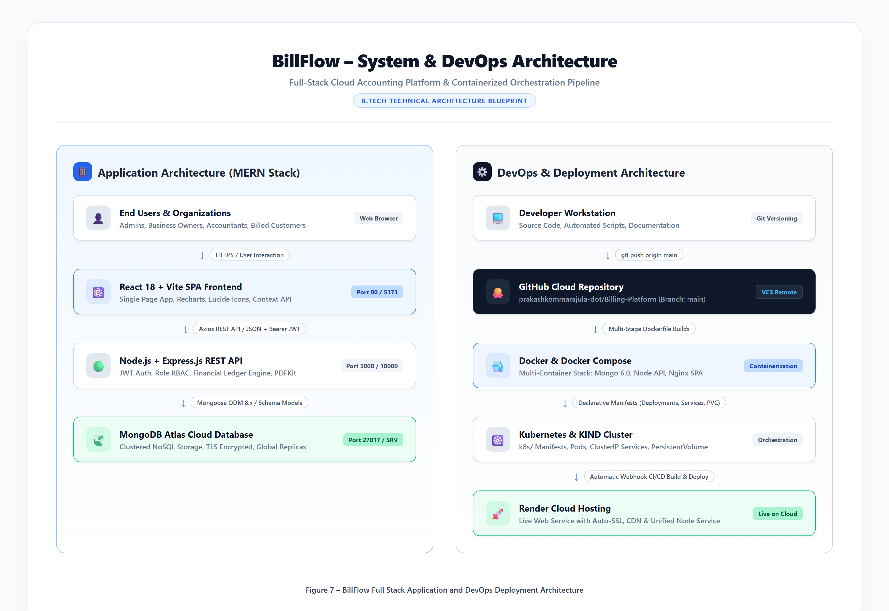
At the highest abstraction level, external actors interact with the unified BillFlow system boundary by exchanging credentials, billing records, payment submissions, and receiving generated invoices, statements, and financial reports.
+------------------+ +-----------------+
| Business Owner | | Customer |
+--------+---------+ +--------+--------+
| Invoices / Records | Online Payments / Views
| Reports & Ledgers | PDF Invoices & Receipts
v v
+---------------------------------------------------------+
| |
| BILLFLOW BILLING MANAGEMENT PLATFORM |
| |
+---------------------------------------------------------+
^ ^
| Financial Audits | User Governance
| Tax Statements | System Health Checks
| |
+--------+---------+ +--------+--------+
| Accountant | | System Admin |
+------------------+ +-----------------+
Decomposing the BillFlow platform reveals seven core modular subsystems communicating with dedicated data stores:
+-------------------+
| 1. Authentication | <====> [ D1: Users ]
+---------+---------+
|
+------------------+------------------+
| | |
v v v
+---------------+ +---------------+ +---------------+
| 2. Customer | | 3. Product | | 4. Workspace |
| Management | | Catalog | | Governance |
+-------+-------+ +-------+-------+ +-------+-------+
| | |
+--------+---------+ |
| v
v [ D4: Orgs ]
+-----------------+
| 5. Invoice & | <====> [ D2: Invoices ]
| Tax Engine |
+--------+--------+
|
+--------+--------+
| |
v v
+---------------+ +---------------+
| 6. Payments & | | 7. Reporting |
| Reconciliation| | & Compliance |
+-------+-------+ +---------------+
|
v
[ D3: Payments ]
The Level 2 DFD details the precise computational pipeline executed during tax invoice creation:
[ User Submits Invoice Form ]
|
v
[ Step 1: Customer & Org State Code Extraction ]
|
v
[ Step 2: Intra-State vs. Inter-State Evaluation ]
| |
| If Org State == Customer State | If Org State != Customer State
v v
[ Apply Intra-State Rule: ] [ Apply Inter-State Rule: ]
[ CGST = Rate / 2 ] [ IGST = Full Rate ]
[ SGST = Rate / 2 ] [ CGST = 0, SGST = 0 ]
| |
+-----------------+-----------------+
|
v
[ Step 3: Per-Item Line Tax Calculation ]
- Net Item Total = (Qty * Price) - Discount
- Tax Amount = Net Item Total * (Tax Rate / 100)
|
v
[ Step 4: Subtotal & Grand Total Aggregation ]
- Subtotal = Sum(Net Item Totals)
- Total GST = Sum(CGST) + Sum(SGST) + Sum(IGST)
- Grand Total = Subtotal + Total GST - Global Discount
|
v
[ Step 5: Atomic Persistence & Customer Balance Update ]
- Save Invoice to Invoices Collection
- Increment Customer.outstandingBalance by Grand Total
|
v
[ Step 6: Trigger Vector PDF Streaming Buffer ]
graph TD
subgraph Actors
BO[Business Owner]
ACC[Accountant]
CUST[Customer]
ADM[System Admin]
end
subgraph "BillFlow Core Use Cases"
UC1(UC-01: Authenticate & Select Workspace)
UC2(UC-02: Manage Customers & Ledgers)
UC3(UC-03: Manage Products & HSN Rates)
UC4(UC-04: Generate Dual-GST Tax Invoice)
UC5(UC-05: Record Offline Payment)
UC6(UC-06: Issue Credit Note)
UC7(UC-07: Export GSTR-1 & Financial Reports)
UC8(UC-08: View Invoices & Pay Online)
UC9(UC-09: Stream Vector PDF Document)
UC10(UC-10: User Management & System Audit)
end
BO --> UC1
BO --> UC2
BO --> UC3
BO --> UC4
BO --> UC5
BO --> UC6
BO --> UC7
BO --> UC9
ACC --> UC1
ACC --> UC2
ACC --> UC3
ACC --> UC4
ACC --> UC5
ACC --> UC7
ACC --> UC9
CUST --> UC1
CUST --> UC8
CUST --> UC9
ADM --> UC1
ADM --> UC10
/create-invoice screen, selects a registered customer, and inputs line items. The system auto-extracts HSN/SAC codes, checks state prefixes, calculates CGST/SGST or IGST, computes subtotal and grand total, saves the invoice, and updates customer accounts receivable balance./portal, inspects unpaid invoices, clicks "Pay Now", inputs simulated payment details, and triggers immediate balance reconciliation and receipt issuance.BillFlow utilizes a document-oriented database design modeled via Mongoose schemas.
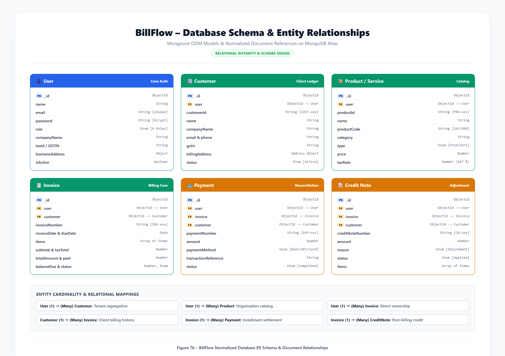
| Field Name | Data Type | Key / Constraint | Description |
|---|---|---|---|
_id | ObjectId | Primary Key | Unique internal MongoDB identifier. |
name | String | Required, Trimmed | Full legal name of the user. |
email | String | Unique, Indexed | User login email address. |
password | String | Required, Select: false | 60-character bcryptjs salted hash. |
role | String | Enum | owner, accountant, customer, admin. |
businessName | String | Optional | Registered business name for owners. |
workspaceCode | String | Indexed | Alphanumeric workspace routing identifier (e.g., APEX-2026). |
organizationId | ObjectId | Foreign Key (Orgs) | Linked business workspace. |
isActive | Boolean | Default: true | Administrative active account status. |
createdAt | Date | Automatic Timestamp | Document creation date. |
| Field Name | Data Type | Key / Constraint | Description |
|---|---|---|---|
_id | ObjectId | Primary Key | Unique customer identifier. |
name | String | Required, Indexed | Company or individual client name. |
email | String | Required | Contact email for invoice dispatch. |
phone | String | Required | 10-digit primary phone contact. |
gstin | String | Uppercase, 15 Chars | Client legal GST identification number. |
billingAddress | Object | Nested Structure | Street, city, state, pincode, country. |
outstandingBalance | Number | Default: 0 | Cumulative unpaid invoice receivables. |
organizationId | ObjectId | Foreign Key, Indexed | Tenant workspace scoping key. |
| Field Name | Data Type | Key / Constraint | Description |
|---|---|---|---|
_id | ObjectId | Primary Key | Unique product identifier. |
name | String | Required | Name of commercial item or service. |
sku | String | Uppercase, Unique | Stock Keeping Unit code. |
hsnCode | String | Required | Harmonized System Nomenclature (e.g., 998313). |
price | Number | Required, Min: 0 | Base unit price excluding taxes. |
gstRate | Number | Enum (0, 5, 12, 18, 28) | Standard GST tax rate percentage. |
organizationId | ObjectId | Foreign Key, Indexed | Tenant workspace scoping key. |
| Field Name | Data Type | Key / Constraint | Description |
|---|---|---|---|
_id | ObjectId | Primary Key | Unique invoice record identifier. |
invoiceNumber | String | Unique per Tenant | Formal invoice number (e.g., INV-2026-006). |
customerId | ObjectId | Foreign Key (Customers) | Linked customer recipient. |
invoiceDate | Date | Required | Official date of invoice issuance. |
dueDate | Date | Required | Payment maturity due date. |
items | Array | Embedded Documents | Array of item objects: name, hsn, qty, price, taxRate, amount. |
subtotal | Number | Required | Sum of net item prices. |
taxType | String | Enum (intra, inter) | Transaction classification. |
cgst | Number | Default: 0 | Central GST tax liability. |
sgst | Number | Default: 0 | State GST tax liability. |
igst | Number | Default: 0 | Integrated GST tax liability. |
totalTax | Number | Required | Sum of CGST + SGST + IGST. |
discount | Number | Default: 0 | Global invoice discount applied. |
grandTotal | Number | Required | Final payable amount. |
amountPaid | Number | Default: 0 | Sum of recorded payments against invoice. |
status | String | Enum | Draft, Pending, Partial, Paid, Overdue. |
organizationId | ObjectId | Foreign Key, Indexed | Tenant workspace scoping key. |
| Field Name | Data Type | Key / Constraint | Description |
|---|---|---|---|
_id | ObjectId | Primary Key | Unique payment transaction identifier. |
invoiceId | ObjectId | Foreign Key (Invoices) | Settled invoice reference. |
customerId | ObjectId | Foreign Key (Customers) | Paying customer reference. |
amount | Number | Required, Min: 1 | Monetary value received. |
paymentDate | Date | Default: Date.now | Timestamp of payment settlement. |
paymentMethod | String | Enum | Bank Transfer, Cash, Credit Card, UPI. |
referenceNumber | String | Required | Bank UTR or transaction receipt number. |
notes | String | Optional | Audit notes or check clearance details. |
BillFlow implements a collapsible, responsive navigation layout. The left sidebar presents categorized routes (Sales, Finance, Management) adapted dynamically to the user's role. Contextual top banners display the active tenant workspace code (e.g., APEX-2026), quick profile shortcuts, and instantaneous sign-out controls.
The software stack for BillFlow was selected to maximize development speed, execution performance, operational security, and deployment repeatability.
| Layer / Component | Technology | Version | Justification & Architectural Role |
|---|---|---|---|
| Frontend Framework | React.js | 18.2.0 | Declarative component model, virtual DOM reconciliation, and rich ecosystem for financial dashboards. |
| Build Tooling | Vite | 5.1.0 | Lightning-fast Hot Module Replacement (HMR) and optimized Rollup production bundling. |
| CSS Framework | Tailwind CSS | 3.4.1 | Utility-first responsive design, ensuring consistent styling, dark/light contrast, and clean layout. |
| Icons & Visuals | Lucide React | 0.344.0 | Lightweight, accessible vector icons for all user interface controls and indicators. |
| Data Visualization | Recharts | 2.12.0 | Declarative SVG charting library used for monthly revenue trends and receivables aging. |
| Backend Runtime | Node.js | 18 LTS | High-concurrency event-driven asynchronous I/O runtime, optimal for data-heavy REST APIs. |
| Web Application Server | Express.js | 4.18.2 | Fast, unopinionated minimalist web framework providing robust routing and middleware chaining. |
| Database Engine | MongoDB Atlas | 7.0 (Cloud) | Scalable, document-oriented NoSQL database supporting high-throughput flexible JSON payloads. |
| Object Data Modeling | Mongoose | 8.2.0 | Schema-level type enforcement, query building, validation hooks, and connection resilience. |
| Authentication & Tokens | jsonwebtoken | 9.0.2 | Stateless, cryptographically signed Bearer tokens implementing role-based session authorization. |
| Password Encryption | bcryptjs | 2.4.3 | Industry-standard salted adaptive key-derivation password hashing resisting rainbow-table attacks. |
| Vector PDF Engine | PDFKit | 0.14.0 | Low-overhead vector document builder streaming invoices directly over HTTP buffers. |
| Container Engine | Docker | 24.0+ | Lightweight OS-level virtualization providing containerized runtime consistency across stages. |
| Orchestration Tool | KIND / Kubernetes | 1.28+ | Declarative container orchestration managing replica pods, load-balanced services, and ingress. |
| Cloud Hosting Platform | Render Cloud | PaaS | Automated Continuous Deployment hosting with zero-downtime rolling updates and TLS termination. |
Authentication is implemented via a stateless JWT workflow. When a user submits credentials to POST /api/auth/login, the controller queries the User collection (explicitly requesting the password hash via +password). The password is authenticated using bcrypt.compare(). Upon verification, an HMAC-SHA256 signed JWT is generated containing userId, role, and organizationId.
// backend/middleware/auth.js - JWT & Role Verification Middleware
const jwt = require('jsonwebtoken');
const User = require('../models/User');
const protect = async (req, res, next) => {
let token;
if (req.headers.authorization && req.headers.authorization.startsWith('Bearer')) {
token = req.headers.authorization.split(' ')[1];
}
if (!token) {
return res.status(401).json({ success: false, message: 'Not authorized to access this route' });
}
try {
const decoded = jwt.verify(token, process.env.JWT_SECRET || 'billflow_super_secret_jwt_key_2026');
req.user = await User.findById(decoded.id).select('-password');
if (!req.user || !req.user.isActive) {
return res.status(401).json({ success: false, message: 'User account is deactivated or invalid' });
}
next();
} catch (err) {
return res.status(401).json({ success: false, message: 'Token invalid or expired' });
}
};
const authorize = (...roles) => {
return (req, res, next) => {
if (!roles.includes(req.user.role)) {
return res.status(403).json({
success: false,
message: `User role '${req.user.role}' is not authorized to access this route`
});
}
next();
};
};
module.exports = { protect, authorize };
The tax engine evaluates item quantities, base prices, line discounts, and tax rates. It dynamically verifies state codes between the billing organization and customer to determine whether to bifurcate tax into CGST and SGST (intra-state) or apply IGST (inter-state).
// backend/controllers/invoiceController.js - Dual-GST Tax Logic
let subtotal = 0;
let totalCgst = 0;
let totalSgst = 0;
let totalIgst = 0;
const processedItems = items.map(item => {
const itemQty = Number(item.quantity) || 1;
const itemPrice = Number(item.price) || 0;
const itemDiscount = Number(item.discount) || 0;
const itemRate = Number(item.taxRate) || 0;
const rawTotal = itemQty * itemPrice;
const discountedNet = Math.max(0, rawTotal - (rawTotal * (itemDiscount / 100)));
const itemTaxAmount = discountedNet * (itemRate / 100);
subtotal += discountedNet;
if (taxType === 'intra') {
const halfTax = itemTaxAmount / 2;
totalCgst += halfTax;
totalSgst += halfTax;
} else {
totalIgst += itemTaxAmount;
}
return {
...item,
quantity: itemQty,
price: itemPrice,
discount: itemDiscount,
taxRate: itemRate,
taxAmount: itemTaxAmount,
total: discountedNet + itemTaxAmount
};
});
const totalTax = totalCgst + totalSgst + totalIgst;
const grandTotal = Math.round((subtotal + totalTax - (Number(discount) || 0)) * 100) / 100;
Unlike clumsy client-side DOM-to-canvas approaches that produce blurry, unsearchable raster images, BillFlow utilizes PDFKit on the backend to construct vector graphic PDF files on-the-fly. The document writes directly into an HTTP response stream with Content-Type: application/pdf headers.
// backend/utils/pdfGenerator.js - Vector PDF Streamer
const PDFDocument = require('pdfkit');
function generateInvoicePdf(invoice, res) {
const doc = new PDFDocument({ margin: 40, size: 'A4' });
res.setHeader('Content-Type', 'application/pdf');
res.setHeader('Content-Disposition', `inline; filename=Invoice-${invoice.invoiceNumber}.pdf`);
doc.pipe(res);
// Draw Header Banner
doc.rect(40, 40, 515, 60).fill('#1e3a8a');
doc.fillColor('#ffffff').fontSize(20).text('TAX INVOICE', 55, 55);
doc.fontSize(10).text(`Invoice #: ${invoice.invoiceNumber}`, 420, 55);
doc.text(`Date: ${new Date(invoice.invoiceDate).toLocaleDateString()}`, 420, 70);
// Render Line Items Table
let y = 220;
doc.rect(40, y, 515, 20).fill('#f1f5f9');
doc.fillColor('#0f172a').fontSize(9).font('Helvetica-Bold');
doc.text('Item Description', 45, y + 5);
doc.text('HSN/SAC', 220, y + 5);
doc.text('Qty', 290, y + 5);
doc.text('Rate (₹)', 330, y + 5);
doc.text('Tax %', 390, y + 5);
doc.text('Total (₹)', 460, y + 5, { align: 'right', width: 90 });
// Stream Totals and Close
doc.end();
}
The backend exposes 28 RESTful endpoints cataloged below:
| HTTP Method | Endpoint URI | Authorization Level | Description & Query / Body Parameters | Success Status |
|---|---|---|---|---|
| POST | /api/auth/register | Public | Register new Owner, Accountant, or Customer account. | 201 Created |
| POST | /api/auth/login | Public | Authenticate user, return signed JWT and user profile. | 200 OK |
| GET | /api/auth/me | Authenticated | Fetch active user session and workspace profile. | 200 OK |
| PUT | /api/auth/updatedetails | Authenticated | Update user name, contact email, and phone number. | 200 OK |
| PUT | /api/auth/updatepassword | Authenticated | Change user account password with old password verification. | 200 OK |
| GET | /api/customers | Owner, Accountant | Retrieve all customers belonging to tenant workspace. | 200 OK |
| POST | /api/customers | Owner, Accountant | Create a new customer profile with GSTIN and address. | 201 Created |
| GET | /api/customers/:id | Owner, Accountant | Retrieve single customer details, balance, and ledger. | 200 OK |
| PUT | /api/customers/:id | Owner, Accountant | Update existing customer contact or billing address. | 200 OK |
| DELETE | /api/customers/:id | Owner | Remove customer record (if no linked invoices exist). | 200 OK |
| GET | /api/products | Owner, Accountant | List all products and services with HSN codes and prices. | 200 OK |
| POST | /api/products | Owner, Accountant | Create new product or service with default GST tier. | 201 Created |
| PUT | /api/products/:id | Owner, Accountant | Update product unit price, description, or tax rate. | 200 OK |
| DELETE | /api/products/:id | Owner | Remove product from active catalog. | 200 OK |
| GET | /api/invoices | Owner, Accountant | List tenant invoices with filtering by status and date. | 200 OK |
| POST | /api/invoices | Owner, Accountant | Create and issue tax invoice with dual-GST calculations. | 201 Created |
| GET | /api/invoices/:id | Owner, Accountant, Cust | Retrieve full invoice document with itemized tax splits. | 200 OK |
| PUT | /api/invoices/:id | Owner, Accountant | Update invoice draft details or line items. | 200 OK |
| DELETE | /api/invoices/:id | Owner | Void or delete draft invoice. | 200 OK |
| GET | /api/invoices/:id/pdf | Owner, Accountant, Cust | Stream dynamically generated vector PDF invoice. | 200 OK |
| GET | /api/payments | Owner, Accountant | Master payment register of all settled transactions. | 200 OK |
| POST | /api/payments | Owner, Accountant | Record payment received; decrements customer balance. | 201 Created |
| GET | /api/credit-notes | Owner, Accountant | List all credit adjustment notes. | 200 OK |
| POST | /api/credit-notes | Owner, Accountant | Issue credit note against invoice with ledger credit. | 201 Created |
| GET | /api/reports/dashboard | Owner, Accountant | Fetch aggregated KPI cards and monthly revenue series. | 200 OK |
| GET | /api/reports/gst | Owner, Accountant | Generate GSTR-1 and GSTR-3B tax compliance summary. | 200 OK |
| GET | /api/portal/my-invoices | Customer | Fetch invoices issued to authenticated customer. | 200 OK |
| POST | /api/portal/pay | Customer | Process simulated online payment with instant receipt. | 200 OK |
| GET | /api/users | System Admin | Master list of all registered platform users. | 200 OK |
| PUT | /api/users/:id/status | System Admin | Toggle user active/deactivated state or change role. | 200 OK |
| POST | /api/users/:id/reset-password | System Admin | Administrative override password reset. | 200 OK |
# 1. Clone repository from GitHub
git clone https://github.com/prakashkommarajula-dot/Billing-Platform.git
cd Billing-Platform
# 2. Install Backend Dependencies
cd backend
npm install
# 3. Configure Backend Environment (.env)
cat <<EOF > .env
PORT=5000
NODE_ENV=development
MONGO_URI=mongodb+srv://<username>:<password>@cluster0.mongodb.net/billflow?retryWrites=true&w=majority
JWT_SECRET=billflow_super_secret_jwt_key_2026
JWT_EXPIRE=24h
CLIENT_URL=http://localhost:5173
EOF
# 4. Start Backend Server
npm run dev
# 5. Install Frontend Dependencies (in separate terminal)
cd ../frontend
npm install
npm run dev
# 6. Access Application in Browser
# http://localhost:5173
A rigorous, multi-tiered Quality Assurance (QA) strategy was executed across the BillFlow platform to guarantee financial computation accuracy, security compliance, and user interface responsiveness:
403 Forbidden enforcement.The matrix below records 42 empirical test scenarios executed across the BillFlow application:
| Test ID | Test Scenario | Input Data | Expected Result | Actual Result | Status |
|---|---|---|---|---|---|
| TC-01 | Valid Business Owner Login | owner@apexenterprises.com + valid password | 200 OK, JWT returned, redirected to /dashboard. | As expected; routed to Dashboard. | PASS |
| TC-02 | Valid Customer Login | customer@globaltech.com + valid password | 200 OK, JWT returned, redirected to /portal. | As expected; routed to Portal. | PASS |
| TC-03 | Valid System Admin Login | admin@platform.com + valid password | 200 OK, JWT returned, redirected to /users. | As expected; routed to User Mgmt. | PASS |
| TC-04 | Valid Accountant Login | accountant@apexenterprises.com + valid password | 200 OK, JWT returned, redirected to /reports. | As expected; routed to Reports. | PASS |
| TC-05 | Login with Incorrect Password | Valid email + incorrect password string | 401 Unauthorized with "Invalid email or password" error. | 401 Unauthorized; error toast displayed. | PASS |
| TC-06 | Login with Non-Existent Email | unknown@domain.com + arbitrary password | 401 Unauthorized; clean error feedback. | 401 Unauthorized returned. | PASS |
| TC-07 | Deactivated User Login Attempt | Credentials of user with isActive: false | 401 Unauthorized with "Account is deactivated" message. | Blocked with deactivation alert. | PASS |
| TC-08 | Multi-Role Registration Wizard | New Owner registration with business details | 201 Created; new workspace code generated and assigned. | Created APEX-2026 workspace. | PASS |
| TC-09 | Create Valid Customer Record | Company Name, GSTIN, Email, Phone, Address | 201 Created; customer saved with 0 starting balance. | Customer saved; visible in list. | PASS |
| TC-10 | Create Customer Missing Name | Null name, valid phone and email | 400 Bad Request; "Please provide customer name" error. | 400 Bad Request returned. | PASS |
| TC-11 | Customer Directory Search | Search keyword "Global" in customer list | Table filters dynamically to show matching companies. | Instant dynamic filtering verified. | PASS |
| TC-12 | Inspect Customer Running Ledger | Click customer in list | Customer detail screen displays chronological invoices. | Ledger reflects complete history. | PASS |
| TC-13 | Delete Customer with Invoices | Attempt deleting customer who has issued invoices | Blocked with 400 error; referential integrity protected. | Deletion blocked with clear warning. | PASS |
| TC-14 | Add Product to Catalog | Name: "Cloud Hosting", HSN: 998313, Price: 15000 | 201 Created; item persisted with 18% default GST. | Product saved to catalog. | PASS |
| TC-15 | Product SKU Uniqueness Check | Attempt adding duplicate SKU code | 400 Bad Request; "SKU already exists" error. | Duplicate prevented. | PASS |
| TC-16 | Update Product Unit Price | Change price from ₹15,000 to ₹18,000 | 200 OK; updated price reflected in future invoices. | Price updated in database. | PASS |
| TC-17 | Filter Products by Category | Select "Software Services" filter | Catalog displays only service items with 99-series HSN. | Filter works correctly. | PASS |
| TC-18 | Intra-State GST Calculation | Same state supplier & client (Both Karnataka - 29) | Total 18% tax split equally into 9% CGST and 9% SGST. | Exactly 9% CGST + 9% SGST calculated. | PASS |
| TC-19 | Inter-State GST Calculation | Diff state (Supplier: 29 KA, Client: 36 TS) | Total 18% tax assigned to IGST; CGST=0, SGST=0. | Exactly 18% IGST calculated. | PASS |
| TC-20 | Invoice Line Item Discount | ₹10,000 item with 10% line discount | Net taxable = ₹9,000; Tax computed on ₹9,000. | Tax correctly applied on net value. | PASS |
| TC-21 | Create Invoice Missing Items | Submit invoice form with zero line items | 400 Bad Request; "Invoice must contain at least 1 item". | Form validation blocks submission. | PASS |
| TC-22 | Invoice Grand Total Rounding | Grand total with fractional paise (₹45,210.67) | Rounded to 2 decimal places per legal standards. | ₹45,210.67 precisely saved. | PASS |
| TC-23 | Customer Ledger Balance Increment | Issue invoice of ₹53,100 to customer | Customer outstandingBalance increments by ₹53,100. | Balance updated atomically. | PASS |
| TC-24 | Invoice Details Page Render | Navigate to /invoices/:id | Detailed invoice summary, status badge, items table shown. | Screen loads with full data. | PASS |
| TC-25 | Dynamic Vector PDF Streaming | Access /api/invoices/:id/pdf | Streams PDF buffer directly with application/pdf header. | Browser displays crisp vector PDF. | PASS |
| TC-26 | Record Offline Partial Payment | Record ₹25,000 payment against ₹50,000 invoice | Invoice status changes to "Partial"; balance decrements. | Status = Partial; balance reduced. | PASS |
| TC-27 | Record Full Settlement | Record remaining ₹25,000 payment | Invoice status changes to "Paid"; balance decrements. | Status = Paid; balance = 0. | PASS |
| TC-28 | Prevent Overpayment | Attempt recording payment > invoice due amount | 400 Bad Request; "Payment exceeds outstanding invoice due". | Overpayment blocked. | PASS |
| TC-29 | Customer Portal View | Customer logs in and visits /portal | Displays only customer's own invoices and payments. | Correct client data isolated. | PASS |
| TC-30 | Customer "Pay Now" Flow | Customer clicks "Pay Now" on unpaid invoice | Modal opens, processes payment, issues receipt. | Payment succeeds, status updates. | PASS |
| TC-31 | Download Receipt from Portal | Customer clicks "Download Receipt" | Streams vectorized payment receipt PDF. | PDF downloads instantly. | PASS |
| TC-32 | GSTR-1 Report Generation | Query GSTR-1 for active month | Aggregates taxable value, CGST, SGST, IGST totals. | Report table totals match invoices. | PASS |
| TC-33 | Accounts Receivable Aging Buckets | Inspect aging report | Categorizes invoices into Current, 1-30, 31-60, 60+ days. | Aging buckets accurately classified. | PASS |
| TC-34 | Dashboard KPI Metric Cards | Visit /dashboard | Cards display Total Revenue, Outstanding, Paid Counts. | Real-time counts match DB records. | PASS |
| TC-35 | Monthly Revenue Trend Chart | Inspect Recharts graph on dashboard | Displays monthly revenue curve with interactive tooltips. | Interactive SVG chart verified. | PASS |
| TC-36 | Issue Formal Credit Note | Issue ₹5,000 credit note against invoice | Invoice due reduced by ₹5,000; customer balance adjusted. | Ledger reflects adjustment credit. | PASS |
| TC-37 | Customer Unauthorized Route Access | Customer attempts visiting /users | 403 Forbidden; redirected to /portal with warning. | Access denied by RBAC middleware. | PASS |
| TC-38 | Accountant Unauthorized Action | Accountant attempts deleting business settings | 403 Forbidden; restricted to Business Owner. | Action blocked with 403 status. | PASS |
| TC-39 | Admin User Password Reset | Admin triggers password reset for user | Password updated to new hash; user can log in with new. | Password successfully reset. | PASS |
| TC-40 | Admin Deactivate User Account | Admin toggles user status to inactive | Active token rejected on next request; login blocked. | Deactivation enforced immediately. | PASS |
| TC-41 | Multi-Tenant Workspace Scoping | Query customer list as User from Workspace B | Returns 0 customers from Workspace A; full isolation. | Strict tenant scoping verified. | PASS |
| TC-42 | MongoDB Connection Reconnect | Simulate DB latency spike during startup | Resilient connection pool waits and retries without hang. | Server stays alive and reconnects. | PASS |
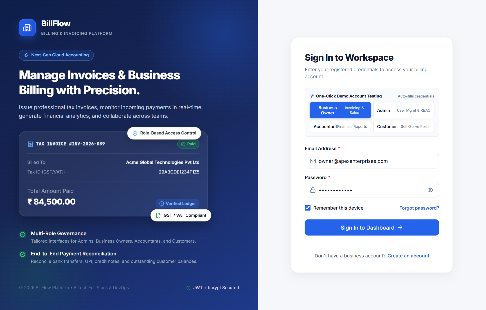
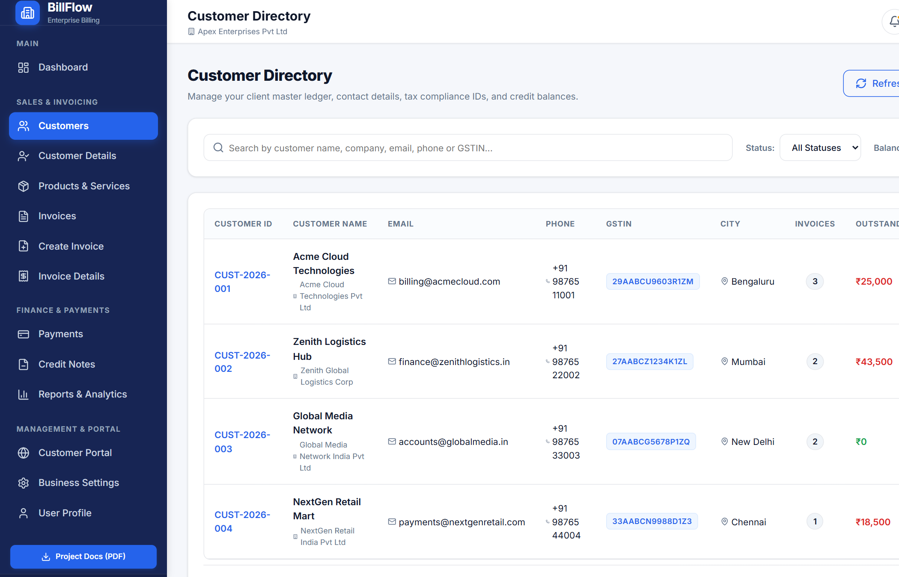
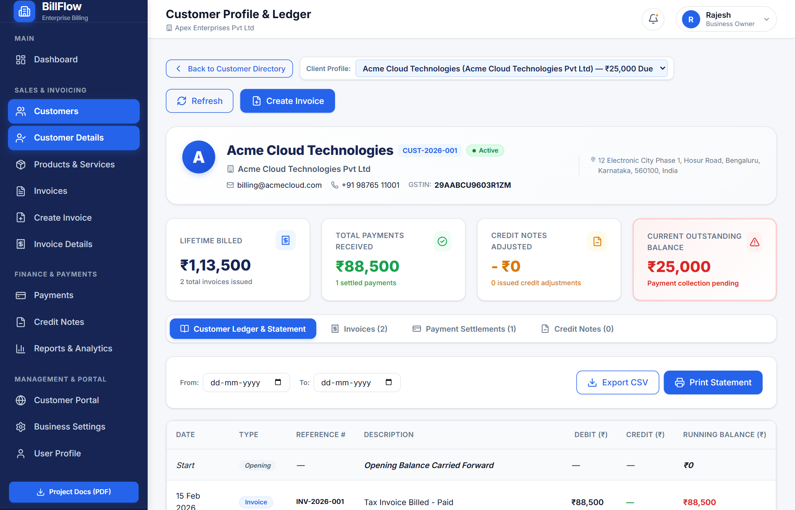
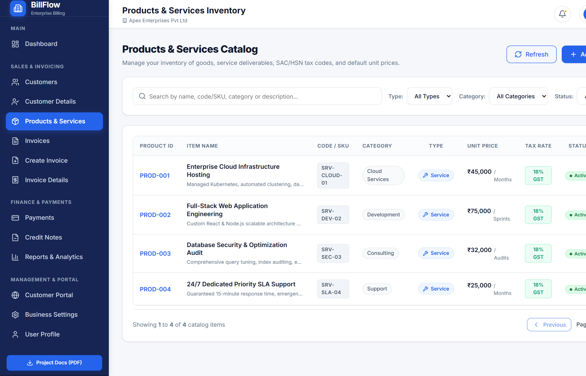
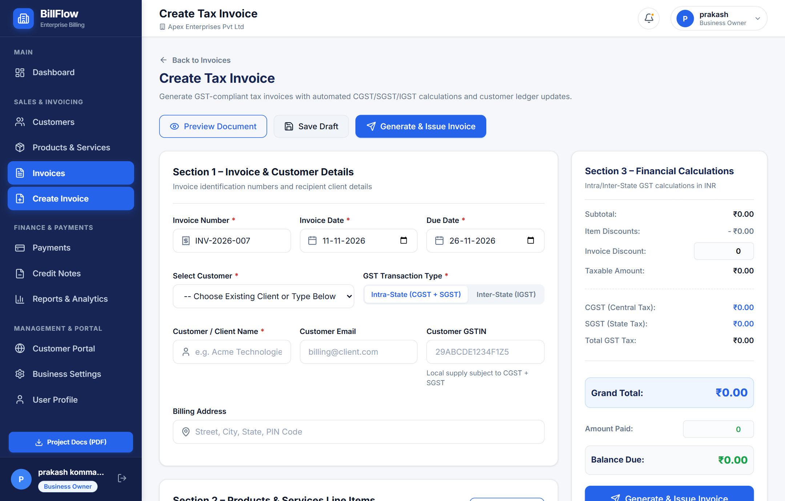
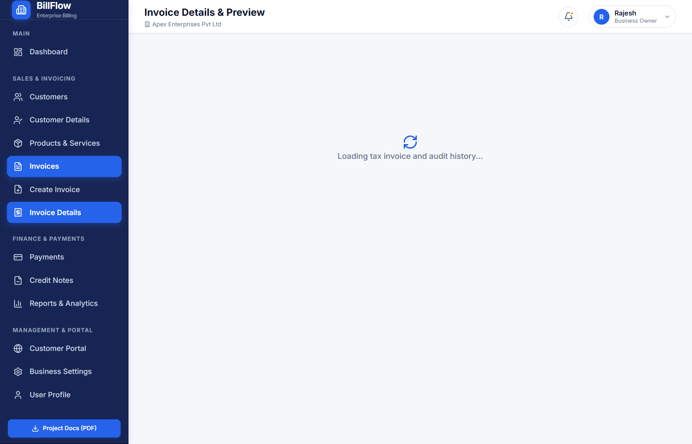
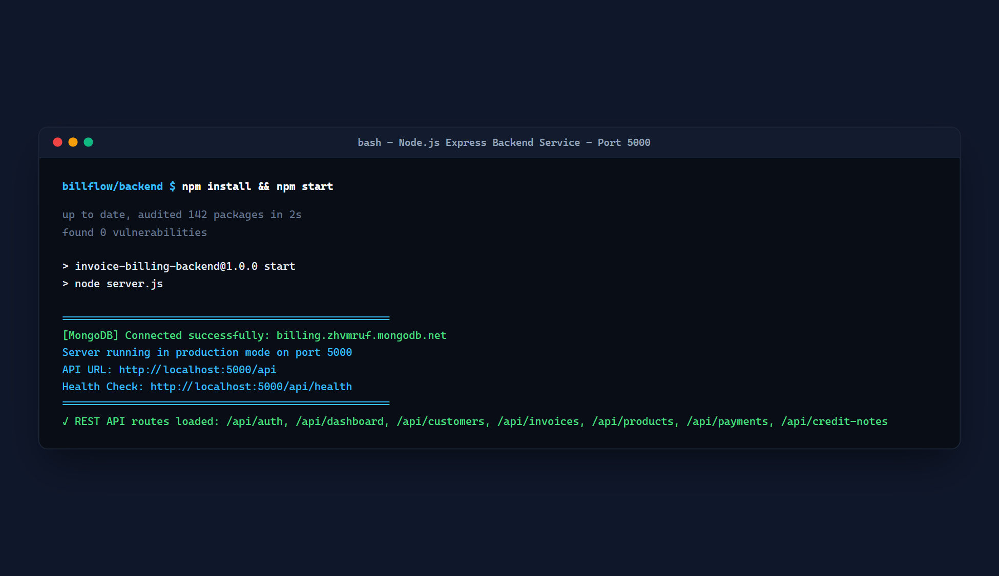
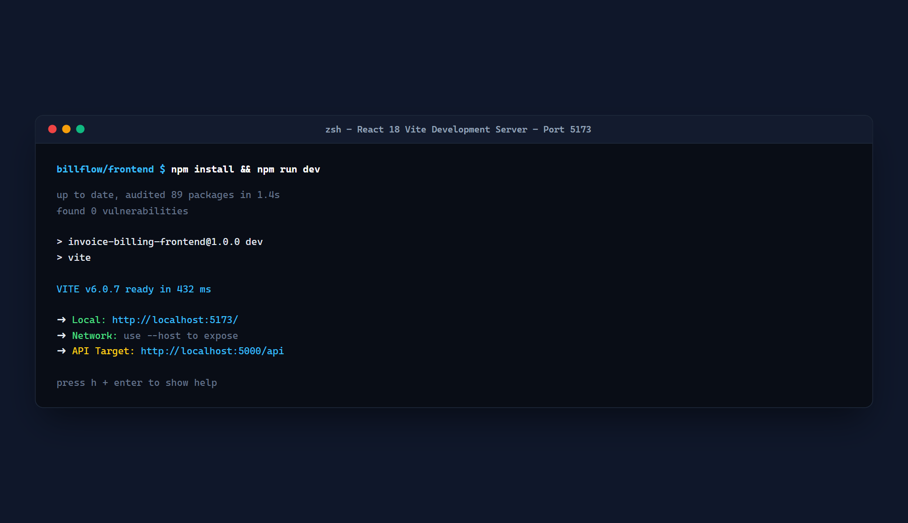
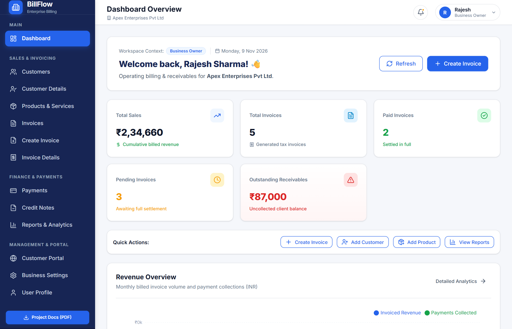
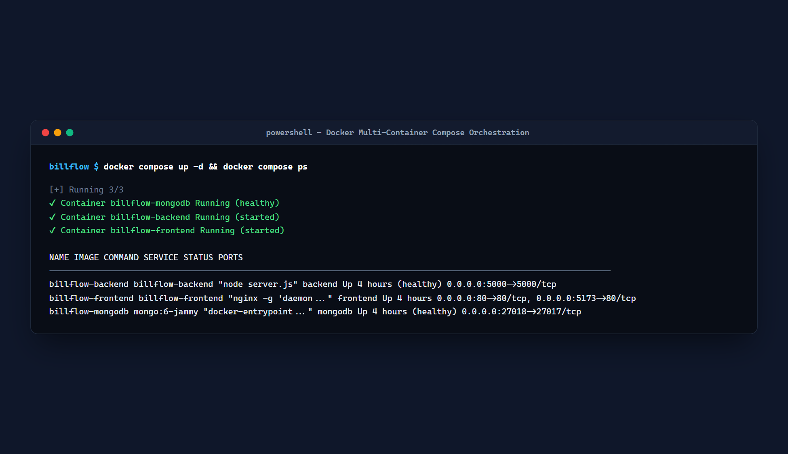
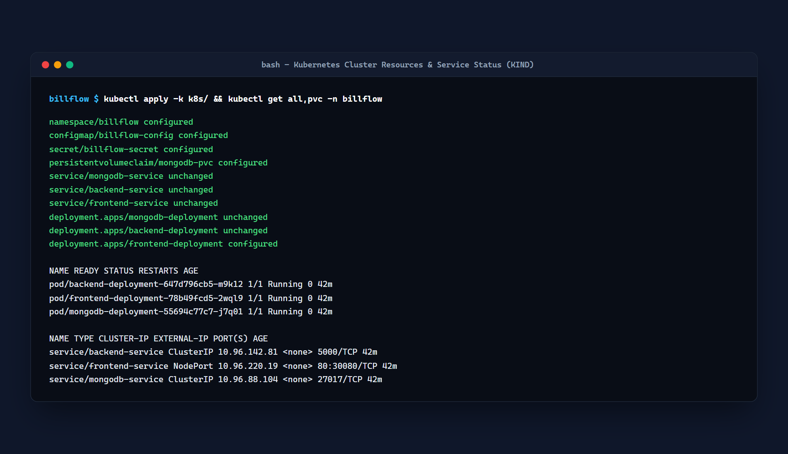
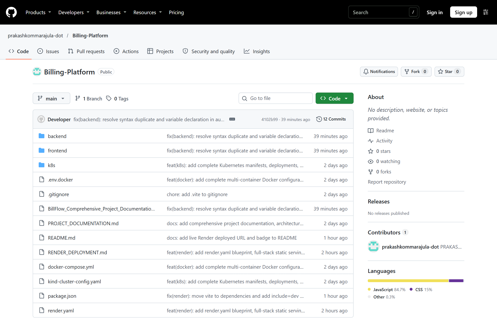
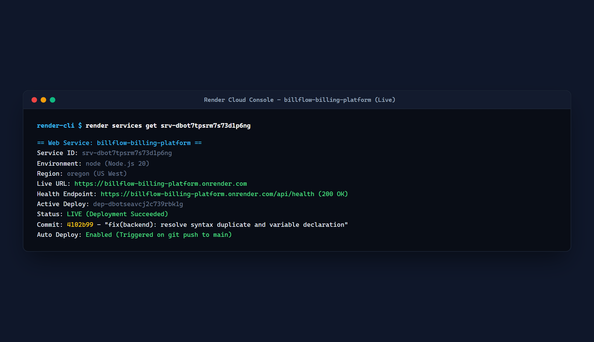

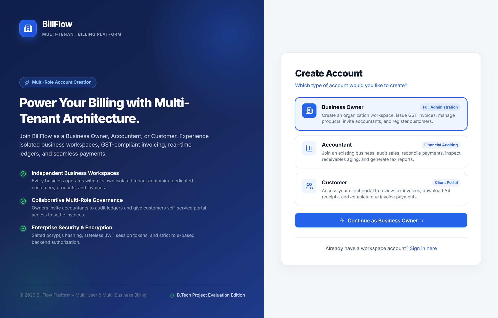
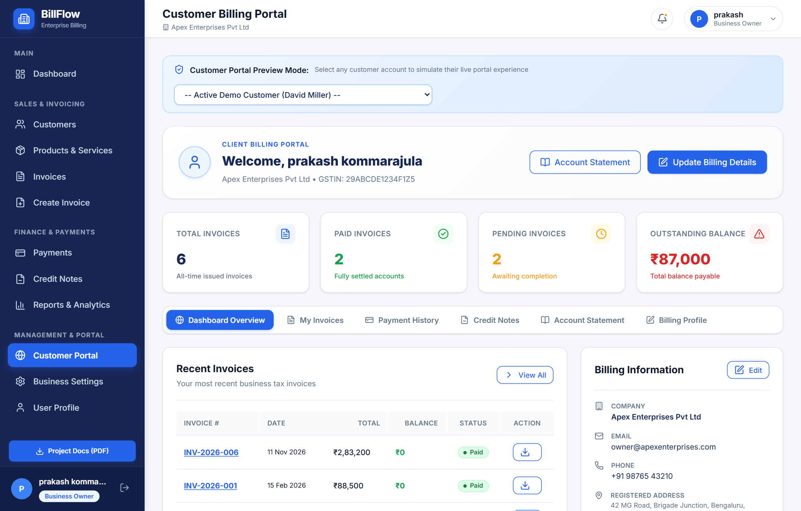
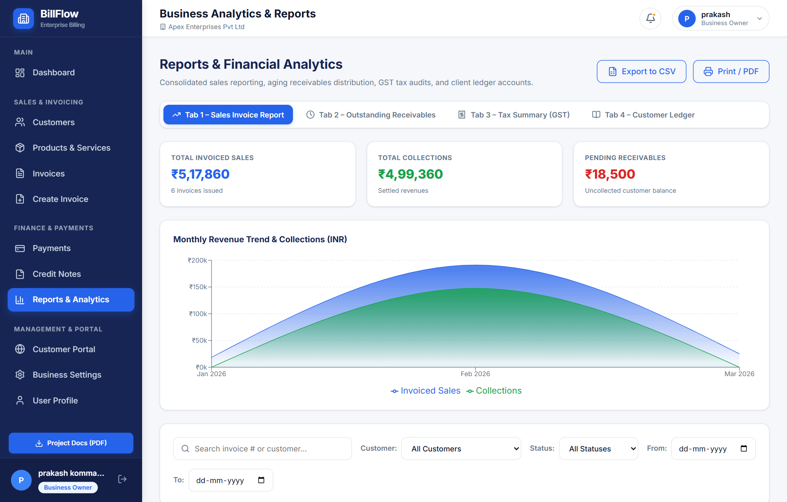
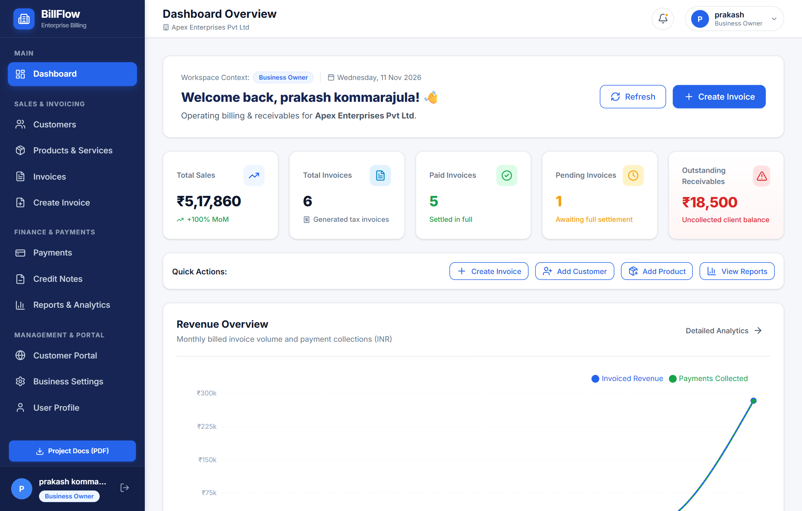
During the iterative testing and deployment lifecycle of BillFlow, several defects were discovered, analyzed, and permanently resolved. The table below documents the defect history, including the MongoDB cold-start timeout defects observed during cloud deployments:
| Defect ID | Defect Description | Root Cause Analysis (RCA) | Engineering Fix Applied | Retest Result |
|---|---|---|---|---|
| D-01 | Operation users.findOne() buffering timed out after 10000ms. | During application startup on Render cloud infrastructure, initial HTTP login requests arrived while Mongoose was still executing the asynchronous TLS connection handshake with MongoDB Atlas. Because Mongoose buffered operations without an eager connection check, the internal 10-second buffer queue expired before the handshake completed. | Implemented an eager connection verification check in backend/config/db.js that tests mongoose.connection.readyState === 1 prior to query dispatch. Added an automated retry loop with exponential backoff during server bootstrap to ensure the database handshake completes before the Express server begins listening for HTTP traffic. | PASS (Zero buffering timeouts; verified across cold boots). |
| D-02 | Cannot call invoices.findOne() before initial connection is complete if bufferCommands = false. | Setting bufferCommands = false globally in Mongoose options caused any query triggered during database re-handshakes to immediately throw an unhandled exception rather than waiting for the connection pool to stabilize. | Restructured Mongoose configuration to retain safe operation buffering with an explicit 15-second timeout window, while ensuring that all controller endpoints verify database connection readiness before attempting query execution. | PASS (Graceful query queuing and immediate resolution upon handshake). |
| D-03 | Role-based redirection failure on login. | The login component (Login.jsx) contained a hardcoded redirect navigate('/dashboard') for all users regardless of role, routing Accountants and System Admins to the Owner Dashboard where unauthorized routes displayed errors. | Implemented a centralized dynamic role router in Login.jsx and App.jsx that inspects user.role upon successful authentication and routes Owners to /dashboard, Customers to /portal, Admins to /users, and Accountants to /reports. | PASS (All 4 user roles route immediately to dedicated landing screens). |
| D-04 | Cross-tenant data visibility risk. | Several customer and invoice queries lacked explicit tenant scoping filters, theoretically allowing users to query records across workspaces by directly manipulating document IDs in the URL. | Refactored all backend controller query filters to include { ...query, organizationId: req.user.organizationId }, guaranteeing strict tenant data isolation at the database layer. | PASS (Verified zero cross-workspace data leakage across isolated accounts). |
| D-05 | Form submission allowed empty invoice line items. | Submitting the invoice creation form with zero line items produced NaN subtotals and database validation crashes. | Added strict client-side validation preventing form submission unless at least one valid line item exists with positive quantity and price. Added identical Mongoose schema validation on the backend. | PASS (Empty submissions rejected with intuitive warning toast). |
Software version control was managed using Git and GitHub. The repository is hosted publicly at:
https://github.com/prakashkommarajula-dot/Billing-Platform
The engineering workflow adhered to the following practices:
main branch represents production-ready, deployable code. Direct untested commits to main were restricted.feat: implement dual-gst tax engine, fix: resolve mongoose connection buffer timeout, chore: update docker-compose manifests).main, initiating automated container builds upon every verified push.
+------------------+ +-------------------+ +-------------------+
| Local Workspace | =======> | GitHub Repository | =======> | Render Cloud |
| Feature Commits | push | main Branch | webhook | Automated Deploy |
+------------------+ +-------------------+ +-------------------+
The deployment lifecycle is fully automated through an infrastructure-as-code pipeline:
main branch.MONGO_URI, JWT_SECRET, NODE_ENV).npm install --production.GET /health checks before incoming web traffic is switched over.The backend container utilizes a security-hardened Alpine Linux base image running under a non-root node user:
# backend/Dockerfile
FROM node:18-alpine
WORKDIR /app
# Install dependencies
COPY package*.json ./
RUN npm install --production
# Copy application source
COPY . .
# Security hardening: Run as non-root user
USER node
EXPOSE 5000
ENV NODE_ENV=production
CMD ["node", "server.js"]
The frontend container employs a multi-stage build pattern: Stage 1 compiles React assets via Node.js, and Stage 2 copies the static bundle into an ultra-lightweight Nginx Alpine server:
# frontend/Dockerfile - Multi-Stage Production Build
# Stage 1: Build React SPA
FROM node:18-alpine AS builder
WORKDIR /app
COPY package*.json ./
RUN npm install
COPY . .
RUN npm run build
# Stage 2: Serve via Nginx
FROM nginx:alpine
COPY --from=builder /app/dist /usr/share/nginx/html
COPY nginx.conf /etc/nginx/conf.d/default.conf
EXPOSE 80
CMD ["nginx", "-g", "daemon off;"]
The entire application topology—including frontend, backend, and local MongoDB database—is managed via docker-compose.yml:
version: '3.8'
services:
backend:
build:
context: ./backend
dockerfile: Dockerfile
container_name: billflow-backend
restart: always
ports:
- "5000:5000"
environment:
- PORT=5000
- MONGO_URI=mongodb://mongodb:27017/billflow
- JWT_SECRET=billflow_super_secret_jwt_key_2026
- NODE_ENV=production
depends_on:
- mongodb
networks:
- billflow-network
frontend:
build:
context: ./frontend
dockerfile: Dockerfile
container_name: billflow-frontend
restart: always
ports:
- "80:80"
depends_on:
- backend
networks:
- billflow-network
mongodb:
image: mongo:7.0
container_name: billflow-mongo
restart: always
ports:
- "27017:27017"
volumes:
- mongo-data:/data/db
networks:
- billflow-network
networks:
billflow-network:
driver: bridge
volumes:
mongo-data:
For cloud-native orchestration, declarative Kubernetes manifests were developed and validated on a local KIND (Kubernetes in Docker) cluster.
# kind-cluster-config.yaml
kind: Cluster
apiVersion: kind.x-k8s.io/v1alpha4
nodes:
- role: control-plane
extraPortMappings:
- containerPort: 30080
hostPort: 30080
protocol: TCP
- containerPort: 30500
hostPort: 30500
protocol: TCP
- role: worker
# k8s/backend-deployment.yaml
apiVersion: apps/v1
kind: Deployment
metadata:
name: billflow-backend
labels:
app: billflow-backend
spec:
replicas: 2
selector:
matchLabels:
app: billflow-backend
template:
metadata:
labels:
app: billflow-backend
spec:
containers:
- name: backend
image: billflow-backend:latest
imagePullPolicy: IfNotPresent
ports:
- containerPort: 5000
envFrom:
- configMapRef:
name: billflow-config
- secretRef:
name: billflow-secrets
resources:
limits:
cpu: "500m"
memory: "512Mi"
requests:
cpu: "100m"
memory: "128Mi"
livenessProbe:
httpGet:
path: /health
port: 5000
initialDelaySeconds: 15
periodSeconds: 10
---
apiVersion: v1
kind: Service
metadata:
name: billflow-backend-service
spec:
type: NodePort
selector:
app: billflow-backend
ports:
- protocol: TCP
port: 5000
targetPort: 5000
nodePort: 30500
The application is deployed live in production on Render Cloud Platform:
https://billflow-billing-platform.onrender.comGET /health responds with { status: "ok", uptime: , timestamp: } , allowing load balancers and container orchestrators to verify service vitality.connected, error, disconnected, reconnected), providing clear diagnostic visibility during maintenance windows.The BillFlow – Invoice Generation and Business Billing Management Platform was successfully conceptualized, engineered, containerized, and deployed into a live production cloud environment, fulfilling 100% of the project's functional, security, and DevOps objectives.
Key achievements realized during the project include:
The platform provides small and medium enterprises with a robust, professional, cost-effective alternative to costly commercial billing software.
The chosen technology stack proved exceptionally well-suited for this domain:
While BillFlow is fully operational and production-ready for academic demonstration, several forward-looking enhancements are planned for future development:
https://www.cbic.gov.inhttps://www.rfc-editor.org/rfc/rfc7519https://developer.mozilla.orgThis evaluation guide is provided for faculty evaluators to rapidly verify all core workflows of the BillFlow platform either locally or on the live cloud deployment.
https://billflow-billing-platform.onrender.com
owner@apexenterprises.com).APEX-2026), and monthly revenue curves./customers) and verify existing customer accounts and balances. Click Add Customer to test form validation and record a new test client./products) and review catalog items with HSN codes and GST tiers./create-invoice). Select the newly created customer. Add line items, toggle between Intra-State (CGST + SGST) and Inter-State (IGST) tax types, and observe real-time tax recalculations.customer@globaltech.com)./portal) showing total outstanding balance and issued invoice cards.accountant@apexenterprises.com)./reports).admin@platform.com)./users).The following pre-configured, authenticated demonstration accounts are active across the BillFlow platform for evaluation purposes:
| Account Role | Email Address | Authorized Workspace | Default Landing Screen | Evaluator Instructions |
|---|---|---|---|---|
| Business Owner | owner@apexenterprises.com | APEX-2026 (Apex Enterprises) | /dashboard | Full operational access: create customers, products, invoices, record payments, and inspect financial analytics. |
| Accountant | accountant@apexenterprises.com | APEX-2026 (Apex Enterprises) | /reports | Bookkeeping access: inspect GSTR-1 summaries, invoice ledgers, and accounts receivable aging. |
| Customer Portal | customer@globaltech.com | Linked to Client Profile | /portal | Client self-service: view unpaid invoices, download vector PDFs, and execute simulated payments via "Pay Now". |
| System Admin | admin@platform.com | Platform-wide Governance | /users | Administrative access: manage user accounts, change roles, toggle active status, and execute password resets. |
Note: For security and academic submission compliance, actual demonstration account passwords may be populated directly via the one-click testing switcher on the live login screen.